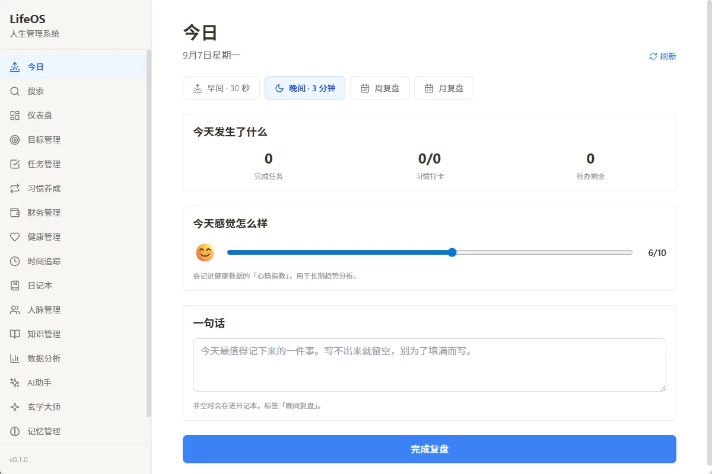
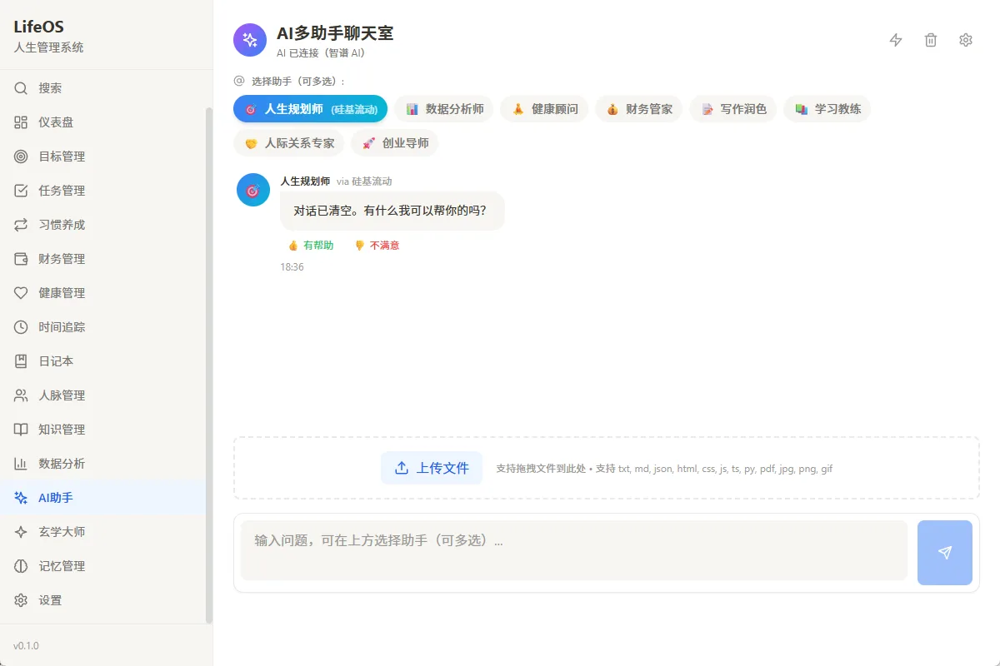

UI & Systems / PROJECT 08
LifeOS
把日常记录连回长期目标
围绕自己的记录、任务和复盘需求，探索多个 AI 助手如何进入持续使用的生活工作流。
- ROLE
- 个人系统构思、信息架构与界面设计
- TIME
- 项目年份待确认
- TOOLS
- 个人信息架构、AI 助手界面；模型与构建工具未记录
- TYPE
- Personal system
- STATUS
- Private Prototype / Local Deployment

01 / OVERVIEW
Overview
「LifeOS」是我围绕个人生活管理搭建的系统，希望把目标与日常行动连接起来。每日页面以早间记录、晚间复盘和周期回顾为切入点，整理任务、习惯与心情；AI 多助手页面则按不同需求组织对话角色，让生活记录、规划与思考有一个持续使用的空间。
02 / PROBLEM
Problem
个人目标、任务、习惯和日记分散时，记录容易停留在输入，难以回到下一步行动。这个系统以我自己的使用需求为起点。
03 / OBSERVATION / INSIGHT
Observation / Insight
每日复盘比完整填写大量字段更适合作为入口；不同主题的助手也需要可辨认的分工。以上是设计判断，不是外部样本研究结论。
04 / DESIGN GOAL
Design Goal
把记录、回顾和下一步行动放在一致的信息结构中；让助手选择、上下文材料和对话处于同一空间。
05 / AI OPPORTUNITY
AI Opportunity
按人生规划、分析、写作与学习等需求组织助手。当前资料能够证明助手选择、聊天及上传区域的界面设计，不据此宣称特定模型、Agent 自治或后台可靠性。
06 / USER FLOW
User Flow
从入口到完成任务，保留最短、可以解释的操作链路。
- 01记录当天
- 02查看任务与习惯
- 03选择 AI 助手
- 04对话整理思路
- 05回到周期复盘
依据现有项目资料整理的流程图，不代表另行开展了用户访谈或行为研究。
07 / INFORMATION ARCHITECTURE
Information Architecture
把核心对象、操作和反馈分别组织，避免功能堆叠掩盖主要任务。
每日空间
- 早间记录
- 晚间复盘
- 心情与任务摘要
生活管理
- 目标与习惯
- 财务与健康
- 时间与日记
AI 多助手
- 人生规划
- 数据分析
- 写作与学习
08 / EXPLORATION
Exploration
用任务摘要、心情评分和一句话记录降低填写负担；将生活模块作为稳定导航，避免每增加一个助手就产生一套新入口。
09 / PROTOTYPE
Prototype
Private Prototype / Local Deployment。当前以已有界面截图说明设计，不提供未公开的原型服务。

10 / AI WORKFLOW
AI Workflow
把人的设计判断与 AI 可以辅助的工作分开说明。
Human directs.
- 定义个人目标与记录维度
- 选择助手和输入材料
- 确认结论与下一步行动
AI assists.
- 按主题辅助对话的设计机会
- 协助整理而非替代个人决定
- 模型调用与输出质量仍需运行证据
11 / BUILD / VIBE CODING
Build / Vibe Coding
本页展示实际界面截图与结构整理。原型运行于私有或本地环境，不提供虚构的公网演示地址；AI 运行录屏、模型配置和代码细节尚未提供。
12 / TESTING
Testing
没有可公开的正式用户测试或量化效果记录。图中的流程是根据现有界面整理的预期路径，仍需要用真实任务和运行录屏验证。
13 / ITERATION
Iteration
每日复盘与 AI 多助手是当前已有的两个界面。资料没有注明先后版本，因此不把它们写成经过对照测试的迭代成果。
14 / OUTCOME
Outcome
形成连接个人记录、生活模块和助手对话的系统界面。当前呈现成果为信息架构与设计实现，不声称提高了某个百分比的效率。
15 / REFLECTION
Reflection
下一步应验证“记录后是否更容易做出下一步决定”，以及助手回答能否被用户自行确认后带回记录，而不是追求助手数量。
CONTINUE EXPLORING